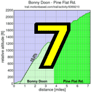

|  |  |
 |
Thanks to the fantastic volunteers this week, and especially to coordinator Will, who handled unforeseen issues supremely well, and I'm not just talking about the rain. Additionally, once again the results crew operated like a well-oiled machine, and I cross-checked Howard & Co's stopwatch times against Pat's Android times against the EXIF time stamps on Phil's excellent finish line photos just to make sure I got everyone right.
Although the weather damped the overall turnout a bit, we had an amazing turnout of fast guys this week, including Irish national hillclimb champion Ryan Sherlock who produced a convincing first place followed by Chris Phipps and Brian Lucido. This may have been one of the toughest Low-Keys ever to break the top 10. And we had a solid turn-out of women this week, as well. The crew was led home by Janet Martinez, but don't forget little Rachel Engelbrecht riding tandem with her Dad. Impressive riding in such cool, wet conditions by little Rachel on a day when plenty of others decided to stay home.
Also notable was Gary Gellin, who proved he's faster running than your friendly reporter is cycling when the grade's above 15%. Gary seems to be barely affected by road grade, although he reported with some disappointment his pace fell below 8 minutes per mile this week.
On the team side, some outstanding results this week from Western Wheelers and Mission Cycling. Western Wheelers checked in with Chris Phipps, Kieran Sherlock, and James Porter but Mission countered with a top 3 of Joe Mulvaney, Jacob Berkman and MArio Hernandez. Western Wheelers came out on top by less than 1 point, with Low-Key and the ever-strong Sisters and Misters of No Mercy a tight 3-4.
Strava T-shirt qualifiers indicated with orange background.
| pl | # | name | team | cat | time | mph | fph | score |
|---|---|---|---|---|---|---|---|---|
| 1 | 808 | Ryan Sherlock | Zipvit/KCNC | 20+ | 19:15 | 9.19 | 5221 | 136.14 |
| 2 | 127 | Christopher Phipps | Western Wheelers | 40+ | 19:47 | 8.95 | 5080 | 132.47 |
| 3 | 109 | Brian Lucido | Sr's & Mr's of No Mercy | Tandem | 20:09 | 8.78 | 4988 | 130.06 |
| 4 | 53 | Tim Clark | Low-Key | 40+ | 20:39 | 8.57 | 4864 | 126.85 |
| 5 | 115 | Joe Mulvaney | Mission Cycling | 25+ | 20:41 | 8.55 | 4857 | 126.65 |
| 6 | 34 | Jacob Berkman | Mission Cycling | 30+ | 20:56 | 8.45 | 4800 | 125.16 |
| 7 | 141 | Kieran Sherlock | Western Wheelers | 40+ | 21:04 | 8.40 | 4768 | 124.33 |
| 8 | 147 | Russell Stevens | ACTC | 40+ | 21:34 | 8.21 | 4660 | 121.51 |
| 9 | 88 | Rich Hill | LGBRC | 45+ | 22:02 | 8.03 | 4561 | 118.93 |
| 10 | 326 | Clark Foy | San Jose Bike Club | U23 | 22:08 | 8.00 | 4540 | 118.38 |
| 11 | 509 | Mario Hernandez | Mission Cycling | 3 | 22:15 | 7.95 | 4516 | 117.75 |
| 12 | 301 | Marcel Appelman | Mission Cycling | 40+ | 22:39 | 7.81 | 4435 | 115.64 |
| 13 | 421 | Ben Weir | Bikeforums.net | 30+ | 22:42 | 7.80 | 4427 | 115.43 |
| 14 | 218 | Tom Gardin | Low-Key | 45+ | 22:44 | 7.78 | 4419 | 115.22 |
| 15 | 1 | Dan Connelly | Low-Key | 3 | 22:58 | 7.70 | 4373 | 114.03 |
| 16 | 7 | James Porter | Western Wheelers | 3 | 23:03 | 7.67 | 4357 | 113.62 |
| 17 | 304 | Rune Dahl | Western Wheelers | 45+ | 23:04 | 7.67 | 4356 | 113.58 |
| 18 | 123 | Christian Paquet | Doogie | 50+ | 23:04 | 7.67 | 4354 | 113.55 |
| 19 | 120 | Shance Ordell | Western Wheelers | 35+ | 23:31 | 7.53 | 4274 | 111.44 |
| 20 | 508 | Brad Ford | Silicon Valley Triathlon | 35+ | 23:34 | 7.51 | 4263 | 111.16 |
| 21 | 146 | Brian Sterling | Webcor/Alto Velo | 45+ | 23:35 | 7.50 | 4259 | 111.07 |
| 22 | 604 | Gary Gellin | Sr's & Mr's of No Mercy | Runner | 23:39 | 7.48 | 4249 | 110.79R |
| 23 | 87 | Josh Hayes | Sr's & Mr's of No Mercy | 30+ | 23:40 | 7.48 | 4246 | 110.72 |
| 24 | 228 | Russell McCrary | Sr's & Mr's of No Mercy | 50+ | 24:18 | 7.28 | 4136 | 107.84 |
| 25 | 219 | Bruce Gardner | Sr's & Mr's of No Mercy | 35+ | 24:19 | 7.28 | 4132 | 107.76 |
| 26 | 96 | Martin Hyland | Western Wheelers | 50+ | 24:27 | 7.24 | 4109 | 107.14 |
| 27 | 332 | Dave Morton | San Jose Bike Club | 35+ | 24:33 | 7.21 | 4093 | 106.73 |
| 28 | 45 | Nathan Cauffman | UID | 30+ | 24:34 | 7.20 | 4090 | 106.66 |
| 29 | 124 | Steve Peck | Silicon Valley Triathlon | 40+ | 24:41 | 7.17 | 4069 | 106.11 |
| 30 | 506 | Andy Crews | 40+ | 24:45 | 7.15 | 4059 | 105.84 | |
| 31 | 262 | Carmelo Rios | Plus 3 | 50+ | 24:57 | 7.09 | 4026 | 104.99 |
| 32 | 507 | Klaus Fleischmann | 40+ | 25:03 | 7.06 | 4011 | 104.58 | |
| 33 | 214 | Joe Fabris | Plus 3 | 50+ | 25:12 | 7.02 | 3988 | 103.99 |
| 34 | 82 | Ryan Gibson | 35+ | 25:12 | 7.02 | 3987 | 103.97 | |
| 35 | 177 | Andre Swart | LGBRC | Junior | 25:29 | 6.94 | 3942 | 102.78 |
| 36 | 161 | Alan Weatherall | San Jose Bike Club | 45+ | 25:31 | 6.93 | 3937 | 102.66 |
| 37 | 58 | Kevin Comerford | Eden Bikes | 30+ | 25:59 | 6.81 | 3867 | 100.83 |
| 38 | 800 | Karta Atehortua | Khalsa Bikes | 30+ Cat 2 | 26:07 | 6.77 | 3846 | 100.30 |
| 39 | 62 | Vince Cummings | 50+ | 26:12 | 6.75 | 3835 | 100.00 | |
| 40 | 61 | Rob Cosaro | Doogie | 50+ | 26:26 | 6.69 | 3801 | 99.12 |
| 41 | 226 | Bogdan Marian | Bikeforums.net | 30+ | 26:42 | 6.63 | 3764 | 98.15 |
| 42 | 103 | Larry Klein | Doogie | 50+ | 26:46 | 6.61 | 3754 | 97.89 |
| 43 | 211 | Bryn Dole | Blekko | 35+ | 26:48 | 6.60 | 3748 | 97.74 |
| 44 | 158 | David Vrane | Sr's & Mr's of No Mercy | 45+ | 26:56 | 6.57 | 3731 | 97.28 |
| 45 | 850 | Sandor Dornbush | 30+ | 27:41 | 6.39 | 3630 | 94.65 | |
| 46 | 310 | Neal Herman | Spike the Wonder Dog | 50+ | 27:42 | 6.39 | 3628 | 94.61 |
| 47 | 327 | Nicholas Brummell | Atlas | 45+ | 27:56 | 6.34 | 3598 | 93.82 |
| 48 | 41 | Patrick Callahan | Hara | 40+ | 28:08 | 6.29 | 3571 | 93.12 |
| 49 | 229 | Paul Melville | Doogie | 60+ | 28:18 | 6.25 | 3550 | 92.58 |
| 50 | 60 | Richard Contreras | rhus | 50+ | 28:23 | 6.23 | 3540 | 92.30 |
| 51 | 30 | Matt Beadon | Nvidia | 30+ | 28:27 | 6.22 | 3533 | 92.11 |
| 52 | 132 | Thomas Rabedeau | SLACer | 50+ | 28:36 | 6.19 | 3513 | 91.61 |
| 53 | 333 | Vinay Ravuri | Georgia Tech | 35+ | 28:39 | 6.17 | 3506 | 91.42 |
| 54 | 64 | Han Wen | Grumpy Old Man (GOM) | 40+ | 28:46 | 6.15 | 3492 | 91.05 |
| 55 | 420 | Christian Templeton | San Jose Bike Club | 29:21 | 6.03 | 3424 | 89.29 | |
| 56 | 244 | Naoto Sato | 45+ | 29:27 | 6.01 | 3413 | 88.99 | |
| 57 | 78 | Bob Falkenberg | Webcor/Alto Velo | 45+ | 29:39 | 5.97 | 3389 | 88.36 |
| 58 | 63 | John D Kastel | Death Valley | 45+ | 29:49 | 5.94 | 3370 | 87.89 |
| 59 | 46 | Gino Cetani | Western Wheelers | 40+ | 30:21 | 5.83 | 3311 | 86.35 |
| 60 | 254 | Plamen Velikov | SLACer | 50+ | 30:28 | 5.81 | 3297 | 85.98 |
| 61 | 216 | David Fitch | San Jose Bike Club | 65+ | 30:34 | 5.79 | 3287 | 85.71 |
| 62 | 208 | Jay Cohan | Spike the Wonder Dog | 45+ | 30:57 | 5.72 | 3246 | 84.65 |
| 63 | 99 | Tim Irvine | 35+ | 31:40 | 5.59 | 3173 | 82.73 | |
| 64 | 42 | Kley Cardona | SF Randonneurs | 45+ | 31:47 | 5.57 | 3162 | 82.45 |
| 65 | 242 | Thomas Preisler | LGBRC | 55+ | 31:58 | 5.53 | 3142 | 81.94 |
| 66 | 318 | Walter Wang | 35+ | 32:22 | 5.47 | 3104 | 80.93 | |
| 67 | 234 | Robert Navasca | 40+ | 34:15 | 5.17 | 2933 | 76.48 | |
| 68 | 37 | Adam Brinkman | The Dirkers | 30+ | 34:35 | 5.12 | 2905 | 75.76M |
| 69 | 250 | Jim Tappan | Sans O2 Bank | 50+ | 35:25 | 5.00 | 2837 | 73.97 |
| 70 | 801 | Joe Blecher | 35:52 | 4.93 | 2801 | 73.04 | ||
| 71 | 302 | Bob Corman | Spike the Wonder Dog | 50+ | 36:40 | 4.83 | 2741 | 71.47 |
| 72 | 86 | Bob Gumaer | UID | 50+ | 38:00 | 4.66 | 2644 | 68.96 |
| 73 | 20 | Michael Ahern | LGBRC | 40+ | 41:31 | 4.26 | 2420 | 63.10 |
| 74 | 75 | David Engelbrecht | Summit chuters | 40+ Tandem | 48:00 | 3.69 | 2093 | 60.29T |
| 75 | 809 | Ben Verwer | 45+ | 46:57 | 3.77 | 2140 | 55.80M | |
| 76 | 131 | Alec Proudfoot | 45+ | 47:23 | 3.73 | 2121 | 55.30M |
| pl | # | name | team | cat | time | mph | fph | score |
|---|---|---|---|---|---|---|---|---|
| 1 | 227 | Janet Martinez | Sr's & Mr's of No Mercy | 40+ | 27:38 | 6.41 | 3637 | 114.68 |
| 2 | 403 | Christy Cowley | Plus 3 | 45+ | 28:34 | 6.20 | 3518 | 110.93 |
| 3 | 409 | Holly Harris | Sr's & Mr's of No Mercy | 45+ | 29:24 | 6.02 | 3417 | 107.75 |
| 4 | 77 | Lori Fabris | Plus 3 | 50+ | 31:17 | 5.66 | 3211 | 101.26 |
| 5 | 90 | Laura Hipp | Western Wheelers | 4 | 32:07 | 5.51 | 3129 | 98.67 |
| 6 | 411 | Susan Horst | Spike the Wonder Dog | 50+ | 32:09 | 5.50 | 3126 | 98.56 |
| 7 | 113 | Karis Mcfarlane | Eden Bikes | 30+ | 33:06 | 5.35 | 3035 | 95.71 |
| 8 | 47 | Alison Chaiken | Sr's & Mr's of No Mercy | W 40+ | 39:19 | 4.50 | 2556 | 80.58M |
| 9 | 802 | Rachel Engelbrecht | Summit chuters | 8+ Tandem | 48:00 | 3.69 | 2093 | 60.29T |
| pl | team | score | riders |
|---|---|---|---|
| 1 | Western Wheelers | 370.42 | Christopher Phipps, Kieran Sherlock, James Porter, Rune Dahl, Shance Ordell, Martin Hyland, Gino Cetani, Laura Hipp |
| 2 | Mission Cycling | 369.56 | Joe Mulvaney, Jacob Berkman, Mario Hernandez, Marcel Appelman |
| 3 | Low-Key | 356.10 | Tim Clark, Tom Gardin, Dan Connelly |
| 4 | Sr's & Mr's of No Mercy | 355.52 | Brian Lucido, Gary Gellin, Josh Hayes, Russell McCrary, Bruce Gardner, David Vrane, Janet Martinez, Holly Harris, Alison Chaiken |
| 5 | San Jose Bike Club | 327.77 | Clark Foy, Dave Morton, Alan Weatherall, Christian Templeton, David Fitch |
| 6 | Plus 3 | 319.91 | Carmelo Rios, Joe Fabris, Christy Cowley, Lori Fabris |
| 7 | Doogie | 310.55 | Christian Paquet, Rob Cosaro, Larry Klein, Paul Melville |
| 8 | LGBRC | 303.66 | Rich Hill, Andre Swart, Thomas Preisler, Michael Ahern |
| 9 | Spike the Wonder Dog | 277.82 | Neal Herman, Jay Cohan, Susan Horst, Bob Corman |
| 10 | 253.92 | Ryan Gibson, Sandor Dornbush, Alec Proudfoot | |
| 11 | Silicon Valley Triathlon | 217.28 | Brad Ford, Steve Peck |
| 12 | Bikeforums.net | 213.58 | Ben Weir, Bogdan Marian |
| 13 | Webcor/Alto Velo | 199.43 | Brian Sterling, Bob Falkenberg |
| 14 | Eden Bikes | 196.54 | Kevin Comerford, Karis Mcfarlane |
| 15 | SLACer | 177.59 | Thomas Rabedeau, Plamen Velikov |
| 16 | UID | 175.62 | Nathan Cauffman, Bob Gumaer |
| 17 | Zipvit/KCNC | 136.14 | Ryan Sherlock |
| 18 | ACTC | 121.51 | Russell Stevens |
| 19 | Summit chuters | 120.59 | David Engelbrecht, Rachel Engelbrecht |
| 20 | Khalsa Bikes | 100.30 | Karta Atehortua |
| 21 | Blekko | 97.74 | Bryn Dole |
| 22 | Atlas | 93.82 | Nicholas Brummell |
| 23 | Hara | 93.12 | Patrick Callahan |
| 24 | rhus | 92.30 | Richard Contreras |
| 25 | Nvidia | 92.11 | Matt Beadon |
| 26 | Georgia Tech | 91.42 | Vinay Ravuri |
| 27 | Grumpy Old Man (GOM) | 91.05 | Han Wen |
| 28 | Death Valley | 87.89 | John D Kastel |
| 29 | SF Randonneurs | 82.45 | Kley Cardona |
| 30 | The Dirkers | 75.76 | Adam Brinkman |
| 31 | Sans O2 Bank | 73.97 | Jim Tappan |